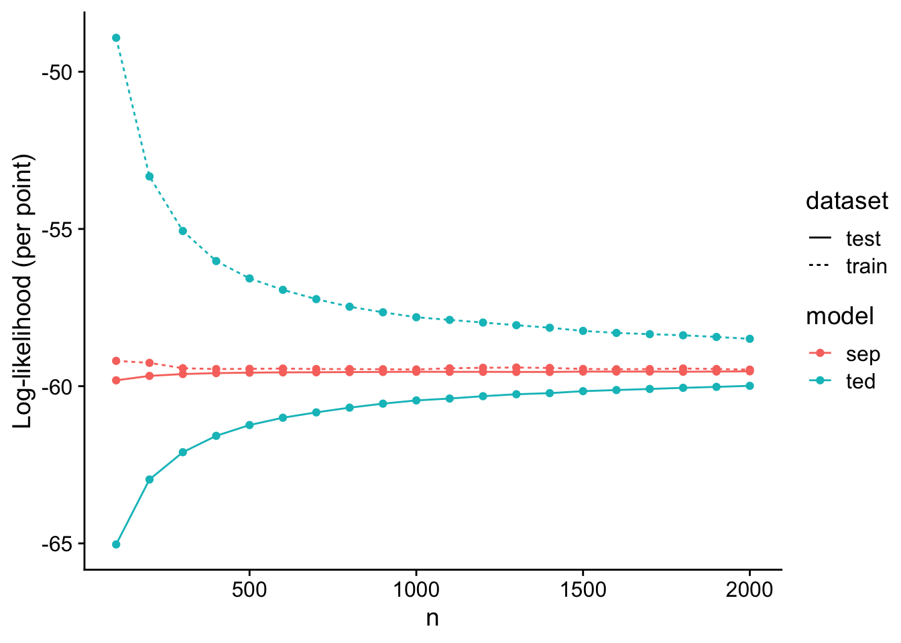

Last updated: 2025-02-10
Checks: 5 2
Knit directory: ashTray/
This reproducible R Markdown analysis was created with workflowr (version 1.7.1). The Checks tab describes the reproducibility checks that were applied when the results were created. The Past versions tab lists the development history.
The R Markdown is untracked by Git. To know which version of the R
Markdown file created these results, you’ll want to first commit it to
the Git repo. If you’re still working on the analysis, you can ignore
this warning. When you’re finished, you can run
wflow_publish to commit the R Markdown file and build the
HTML.
Great job! The global environment was empty. Objects defined in the global environment can affect the analysis in your R Markdown file in unknown ways. For reproduciblity it’s best to always run the code in an empty environment.
The command set.seed(20250123) was run prior to running
the code in the R Markdown file. Setting a seed ensures that any results
that rely on randomness, e.g. subsampling or permutations, are
reproducible.
Great job! Recording the operating system, R version, and package versions is critical for reproducibility.
Nice! There were no cached chunks for this analysis, so you can be confident that you successfully produced the results during this run.
Using absolute paths to the files within your workflowr project makes it difficult for you and others to run your code on a different machine. Change the absolute path(s) below to the suggested relative path(s) to make your code more reproducible.
| absolute | relative |
|---|---|
| ~/Documents/ashTray/ | . |
Great! You are using Git for version control. Tracking code development and connecting the code version to the results is critical for reproducibility.
The results in this page were generated with repository version 858f535. See the Past versions tab to see a history of the changes made to the R Markdown and HTML files.
Note that you need to be careful to ensure that all relevant files for
the analysis have been committed to Git prior to generating the results
(you can use wflow_publish or
wflow_git_commit). workflowr only checks the R Markdown
file, but you know if there are other scripts or data files that it
depends on. Below is the status of the Git repository when the results
were generated:
Ignored files:
Ignored: .Rhistory
Ignored: .Rproj.user/
Ignored: analysis/.Rhistory
Ignored: data/fitted_models/
Ignored: data/processed_data/
Ignored: data/raw_data/
Untracked files:
Untracked: analysis/dimension_sims.Rmd
Unstaged changes:
Modified: analysis/ed_em_cancer.Rmd
Note that any generated files, e.g. HTML, png, CSS, etc., are not included in this status report because it is ok for generated content to have uncommitted changes.
There are no past versions. Publish this analysis with
wflow_publish() to start tracking its development.
Here, I provide a simple proof of concept simulation showing the benefits (in terms of test log-likelihood) of assuming a separable covariance structure when one generates data with such a structure. This is conceptually very intuitive, but it is nice to have an empirical demonstration.
Specifically, I generate data from the model:
\[\begin{align*} \textrm{vec}(\boldsymbol{Y}_{i}) &\sim \mathcal{N}_{pq} (\boldsymbol{\theta}_{i}, \boldsymbol{V}_{i}) \quad \textrm{independently for $i = 1, \dots, n$} \\ \boldsymbol{\theta}_{1}, \dots, \boldsymbol{\theta}_{n} &\overset{\text{iid}} {\sim} \mathcal{N}_{pq}(\boldsymbol{0}, \boldsymbol{R} \otimes \boldsymbol{C}), \end{align*}\]
where each matrix \(\boldsymbol{Y}_{i}\) is \(p \times q\), \(\boldsymbol{R}\) is \(p \times p\), and \(\boldsymbol{C}_{k}\) is \(q \times q\).
Below, I provide a simulation where \(p = q = 10\), and I vary the sample size \(n\) between \(100\) and \(2000\). To these data, I fit a) the MLE of \(\boldsymbol{R}\) and \(\boldsymbol{C}\) in the model above (via an EM algorithm) and b) the unconstrained MLE under the normal model via a truncated eigenvalue decomposition.
ted <- function (S, minval = 0, r = nrow(S)) {
n <- nrow(S)
r <- min(r,n)
out <- eigen(S)
d <- out$values
d <- pmax(d-1,minval)
if (r < n)
d[seq(r+1,n)] <- minval
return(tcrossprod(out$vectors %*% diag(sqrt(d))))
}
spd_inv <- function(A) {
chol2inv(chol(A))
}
# Helper function: partial_trace_1
# Interprets M as a (p*q) x (p*q) matrix and returns a q x q matrix
# where the (k,l)-th entry is the sum over a=1,...,p of M[(a-1)*q + k, (a-1)*q + l].
partial_trace_1 <- function(M, p, q) {
out <- matrix(0, q, q)
for (k in seq_len(q)) {
for (l in seq_len(q)) {
s <- 0
for (a in seq_len(p)) {
row_idx <- (a - 1) * q + k
col_idx <- (a - 1) * q + l
s <- s + M[row_idx, col_idx]
}
out[k, l] <- s
}
}
out
}
# Helper function: partial_trace_2
# Interprets M as a (p*q) x (p*q) matrix arranged in p blocks of rows,
# each block of size q x q. It returns a p x p matrix where the (a,b)-th entry
# is the trace of the (a,b)-th block.
partial_trace_2 <- function(M, p, q) {
out <- matrix(0, p, p)
for (a in seq_len(p)) {
for (b in seq_len(p)) {
s <- 0
for (k in seq_len(q)) {
row_idx <- (a - 1) * q + k
col_idx <- (b - 1) * q + k
s <- s + M[row_idx, col_idx]
}
out[a, b] <- s
}
}
out
}
# Main function: opt_RC_uniform
# Arguments:
# Y : An n x (p*q) matrix where each row is a vector mu_i'
# S : A constant (p*q) x (p*q) matrix used in every T_i (T_i = mu_i mu_i' + S)
# R : A p x p initial estimate for R
# C : A q x q initial estimate for C
# n_iter: number of alternating updates to perform
opt_RC_uniform <- function(M, S, R, C, n, n_iter = 5) {
p <- nrow(R)
q <- nrow(C)
# Identity matrices used for Kronecker products:
I_p <- diag(p)
I_q <- diag(q)
# Combined matrix: sum_i T_i = M_mu + n * S
M_combined <- M + n * S
for (iter in seq_len(n_iter)) {
# --- Update R given C ---
C_inv <- spd_inv(C)
# Form A = I_p \otimes C_inv; dimension (p*q) x (p*q)
A_mat <- kronecker(I_p, C_inv)
# Compute the partial trace over the second factor (q)
R_sum <- partial_trace_2(A_mat %*% M_combined, p, q)
R <- R_sum / (n * q)
# --- Update C given R ---
R_inv <- spd_inv(R)
# Form B = R_inv \otimes I_q; dimension (p*q) x (p*q)
B_mat <- kronecker(R_inv, I_q)
# Compute the partial trace over the first factor (p)
C_sum <- partial_trace_1(B_mat %*% M_combined, p, q)
C <- C_sum / (n * p)
}
list(R = R, C = C)
}
# Get the loglik of the model Y ~ N(0, I + Sigma)
get_loglik <- function(Y, Sigma) {
n <- nrow(Y)
diag(Sigma) <- diag(Sigma) + 1
chol_Sigma <- chol(Sigma)
Sigma_inv <- chol2inv(chol_Sigma)
half_logdet_Sigma <- sum(log(diag(chol_Sigma)))
quad_form <- sum((Y %*% Sigma_inv) * Y)
loglik <- -0.5 * quad_form - half_logdet_Sigma * n
return(loglik)
}
# Get the loglik of the model Y ~ N(0, I + R \kron C)
get_sep_loglik <- function(Y, R, C) {
get_loglik(Y, kronecker(R, C))
}
get_post_moments <- function(Y, R, C) {
U <- kronecker(R, C)
U_plus_V <- U
diag(U_plus_V) <- diag(U_plus_V) + 1
U_plus_V_inv <- spd_inv(U_plus_V)
S <- U - U %*% U_plus_V_inv %*% U
b_T <- tcrossprod(U %*% U_plus_V_inv, Y)
M <- tcrossprod(b_T)
return(
list(
S = S,
M = M
)
)
}
optimize_RC_ed <- function(Y, p, q, maxiter = 100) {
n <- nrow(Y)
R <- diag(runif(p, 0.5, 1.5))
C <- diag(runif(q, 0.5, 1.5))
loglik <- get_sep_loglik(Y, R, C)
for (i in 1:maxiter) {
#print(
# glue::glue("Iteration {i}: loglik = {loglik}")
#)
post_moments <- get_post_moments(Y, R, C)
new_RC <- opt_RC_uniform(
M = post_moments$M,
S = post_moments$S,
R = R,
C = C,
n = n
)
R <- new_RC$R
C <- new_RC$C
loglik <- get_sep_loglik(Y, R, C)
}
return(
list(
R = R,
C = C
)
)
}generate_mvn_data <- function(n, U) {
d <- ncol(U)
Y <- MASS::mvrnorm(
n = n,
mu = rep(0, d),
Sigma = U + diag(d)
)
return(Y)
}
generate_sep_cov <- function(p, q) {
R <- matrixsampling::rinvwishart(n = 1, nu = p + 2, Omega = diag(p))[,,1]
C <- matrixsampling::rinvwishart(n = 1, nu = q + 2, Omega = diag(q))[,,1]
U <- kronecker(R, C)
return(U)
}mle_S <- function(Y) {
# Number of observations
n <- nrow(Y)
# Compute the empirical covariance matrix.
# Note: crossprod(Y) computes t(Y) %*% Y.
Sigma_emp <- crossprod(Y) / n
# Compute the eigen-decomposition of the sample covariance matrix
eig <- eigen(Sigma_emp, symmetric = TRUE)
# Truncate eigenvalues: subtract 1 and set negative values to zero
lambda_trunc <- pmax(eig$values - 1, 0)
# Reconstruct the estimated S using the truncated eigenvalues
S_mle <- eig$vectors %*% diag(lambda_trunc) %*% t(eig$vectors)
return(S_mle)
}
d <- 2
U <- generate_sep_cov(d, d)
Y_train <- generate_mvn_data(1225, U)
out <- optimize_RC_ed(Y_train, d, d, maxiter = 1000)n_test <- 10000
n_vec <- seq(100, 2000, 100)
i_vec <- 1:10
d <- 10
udr_raw_train_ll <- numeric(length(n_vec) * length(i_vec))
udr_raw_test_ll <- numeric(length(n_vec) * length(i_vec))
sep_train_ll <- numeric(length(n_vec) * length(i_vec))
sep_test_ll <- numeric(length(n_vec) * length(i_vec))
n_track_vec <- numeric(length(n_vec) * length(i_vec))
total_idx <- 1
for (n in n_vec) {
for (i in i_vec) {
print(
glue::glue("Fitting iteration {i} of sample size {n}")
)
s <- i + d
set.seed(s)
U <- generate_sep_cov(d, d)
Y_train <- generate_mvn_data(n, U)
# generate a large test set so that the variance of test error is low
Y_test <- generate_mvn_data(n_test, U)
# Now, I want to fit 2 different models:
# (1) UDR no penalty
# (2) Separable
U_udr <- ted(cov(Y_train))
sep_fit <- optimize_RC_ed(Y_train, d, d, maxiter = 100)
# now, collect summary statistics
U_sep <- kronecker(sep_fit$R, sep_fit$C)
n_track_vec[total_idx] <- n
udr_raw_train_ll[total_idx] <- get_loglik(Y_train, U_udr) / n
udr_raw_test_ll[total_idx] <- get_loglik(Y_test, U_udr) / n_test
sep_train_ll[total_idx] <- get_loglik(Y_train, U_sep) / n
sep_test_ll[total_idx] <- get_loglik(Y_test, U_sep) / n_test
total_idx <- total_idx + 1
}
}
res_df <- data.frame(
n = n_track_vec,
udr_train_ll = udr_raw_train_ll,
udr_test_ll = udr_raw_test_ll,
sep_train_ll = sep_train_ll,
sep_test_ll = sep_test_ll
)
readr::write_rds(res_df, "data/processed_data/sample_size_sim.rds")res_df <- readr::read_rds("data/processed_data/sample_size_sim.rds")res_sum_df <- res_df %>%
dplyr::group_by(
n
) %>%
dplyr::summarise(
udr_train_ll = mean(udr_train_ll),
udr_test_ll = mean(udr_test_ll),
sep_train_ll = mean(sep_train_ll),
sep_test_ll = mean(sep_test_ll)
) %>% dplyr::rename(
ted_train_ll = udr_train_ll,
ted_test_ll = udr_test_ll
)
res_sum_long_df <- res_sum_df %>%
tidyr::pivot_longer(
cols = c(ted_train_ll, ted_test_ll, sep_train_ll, sep_test_ll),
names_to = "model_type",
values_to = "ll"
)
res_sum_long_df <- res_sum_long_df %>%
dplyr::mutate(
model = substr(model_type, 1, 3),
dataset = substr(model_type, 5, 9)
)
res_sum_long_df <- res_sum_long_df %>%
dplyr::mutate(
dataset = ifelse(dataset == "test_", "test", dataset)
)
ggplot(data = res_sum_long_df) +
geom_point(aes(x = n, y = ll, color = model)) +
geom_line(aes(x = n, y = ll, color = model, linetype = dataset)) +
xlab("n") +
ylab("Log-likelihood (per point)") +
cowplot::theme_cowplot()
Here, it is clear that for a small sample size relative to the total number of variables (\(p * q = 100\)), the TED algorithm greatly overfits the data. However, even for a sample size of only \(100\), the separable model performs quite well, overfitting only slightly even for small \(n\).
sessionInfo()R version 4.4.0 (2024-04-24)
Platform: aarch64-apple-darwin20
Running under: macOS Ventura 13.5
Matrix products: default
BLAS: /Library/Frameworks/R.framework/Versions/4.4-arm64/Resources/lib/libRblas.0.dylib
LAPACK: /Library/Frameworks/R.framework/Versions/4.4-arm64/Resources/lib/libRlapack.dylib; LAPACK version 3.12.0
locale:
[1] en_US.UTF-8/en_US.UTF-8/en_US.UTF-8/C/en_US.UTF-8/en_US.UTF-8
time zone: America/New_York
tzcode source: internal
attached base packages:
[1] stats graphics grDevices utils datasets methods base
other attached packages:
[1] ggplot2_3.5.1 dplyr_1.1.4
loaded via a namespace (and not attached):
[1] sass_0.4.9 utf8_1.2.4 generics_0.1.3
[4] tidyr_1.3.1 stringi_1.8.4 hms_1.1.3
[7] digest_0.6.36 magrittr_2.0.3 evaluate_0.24.0
[10] grid_4.4.0 fastmap_1.2.0 rprojroot_2.0.4
[13] workflowr_1.7.1 jsonlite_1.8.8 promises_1.3.0
[16] purrr_1.0.2 fansi_1.0.6 scales_1.3.0
[19] jquerylib_0.1.4 cli_3.6.3 rlang_1.1.4
[22] cowplot_1.1.3 munsell_0.5.1 withr_3.0.0
[25] cachem_1.1.0 matrixsampling_2.0.0 yaml_2.3.8
[28] tools_4.4.0 keep_1.0 tzdb_0.4.0
[31] colorspace_2.1-0 httpuv_1.6.15 vctrs_0.6.5
[34] R6_2.5.1 lifecycle_1.0.4 git2r_0.33.0
[37] stringr_1.5.1 fs_1.6.4 MASS_7.3-61
[40] pkgconfig_2.0.3 pillar_1.9.0 bslib_0.7.0
[43] later_1.3.2 gtable_0.3.5 glue_1.7.0
[46] Rcpp_1.0.13 xfun_0.45 tibble_3.2.1
[49] tidyselect_1.2.1 highr_0.11 rstudioapi_0.16.0
[52] knitr_1.47 farver_2.1.2 htmltools_0.5.8.1
[55] labeling_0.4.3 rmarkdown_2.27 readr_2.1.5
[58] compiler_4.4.0